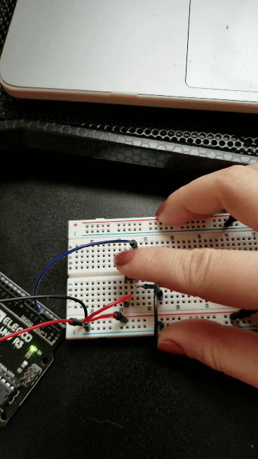

Create a webpage with p5.js that interacts with data that’s coming from the arduino over serial using Serial.print and p5.js.
A snippet of the schematic:
Assuming that 200mA of current can flow through the push button, it is calcuated to require 25 Ohms of resistance, so I used the 10k Ohm resistor.
What the circuit looks like:
The push button is connected to pin 2 and takes in a value of 1 or 0 depending on whether or not the button is pushed.
Here's my arduino code:
void setup() {
Serial.begin(9600); // initialize serial communications at 9600 bps
}
void loop() {
int button = digitalRead(2); // reads in pin status from pin 2
Serial.println(button); // Displays 0 if off, 1 if on to Serial Monitor
delay(50); // delay to display
}
Here's my p5.js code:
var serial; // variable to hold an instance of the serialport library
var portName = '/dev/ttyACM0' //rename to the name of your port
var datain; //some data coming in over serial!
var xPos = 0;
function setup() {
serial = new p5.SerialPort(); // make a new instance of the serialport library
serial.on('list', printList); // set a callback function for the serialport list event
serial.on('connected', serverConnected); // callback for connecting to the server
serial.on('open', portOpen); // callback for the port opening
serial.on('data', serialEvent); // callback for when new data arrives
serial.on('error', serialError); // callback for errors
serial.on('close', portClose); // callback for the port closing
serial.list(); // list the serial ports
serial.open(portName); // open a serial port
createCanvas(1200, 800);
background(0x08, 0x16, 0x40);
}
// get the list of ports:
function printList(portList) {
// portList is an array of serial port names
for (var i = 0; i < portList.length; i++) {
// Display the list the console:
print(i + " " + portList[i]);
}
}
function serverConnected() {
print('connected to server.');
}
function portOpen() {
print('the serial port opened.')
}
function serialError(err) {
print('Something went wrong with the serial port. ' + err);
}
function portClose() {
print('The serial port closed.');
}
function serialEvent() {
if (serial.available()) {
datain = Number(serial.readLine());
//console.log(datain);
}
}
function graphData(newData) {
// map the range of the input to the window height:
var yPos = map(newData, 0, 255, 0, height);
// draw the line in a pretty color:
stroke(255, 0, 80);
line(xPos, height, xPos, height - yPos);
// at the edge of the screen, go back to the beginning:
if (xPos >= width) {
xPos = 0;
// clear the screen by resetting the background:
background(0x08, 0x16, 0x40);
} else {
// increment the horizontal position for the next reading:
xPos++;
}
}
function draw() {
background(0);
fill(255);
if (datain == 0) {
text("button pressed: NO", 30,30); // displays "No" when off
} else {
text("button pressed: YES", 30,30); // displays "Yes" when on
}
}
See it in action:
